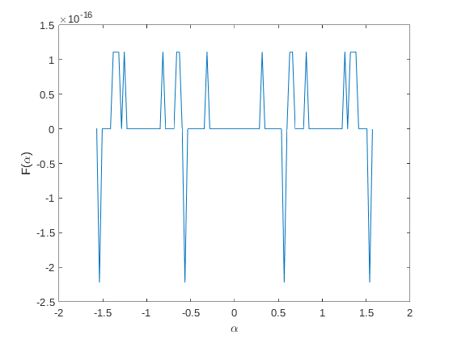

alpha = -pi/2: pi/100: pi/2;
F_alpha = 1 - (sin(alpha) .^ 2 + cos(alpha) .^ 2);
disp(F_alpha)
alpha_zeros = alpha(F_alpha == 0)
plot(alpha, F_alpha)
xlabel('\alpha')
ylabel('F(\alpha)')
1.0e-15 *
Columns 1 through 7
0 -0.2220 0 0 0 0 0.1110
Columns 8 through 14
0.1110 0.1110 0 0.1110 0 0 0
Columns 15 through 21
0 0 0 0 0 0 0
Columns 22 through 28
0 0 0 0.1110 0 0 0
Columns 29 through 35
0 0.1110 0.1110 0 -0.2220 0 0
Columns 36 through 42
0 0 0 0 0 0.1110 0
Columns 43 through 49
0 0 0 0 0 0 0
Columns 50 through 56
0 0 0 0 0 0 0
Columns 57 through 63
0 0 0 0 0.1110 0 0
Columns 64 through 70
0 0 0 0 0 -0.2220 0
Columns 71 through 77
0.1110 0.1110 0 0 0 0 0.1110
Columns 78 through 84
0 0 0 0 0 0 0
Columns 85 through 91
0 0 0 0 0 0 0.1110
Columns 92 through 98
0 0.1110 0.1110 0.1110 0 0 0
Columns 99 through 101
0 -0.2220 0
alpha_zeros =
Columns 1 through 7
-1.5708 -1.5080 -1.4765 -1.4451 -1.4137 -1.2881 -1.2252
Columns 8 through 14
-1.1938 -1.1624 -1.1310 -1.0996 -1.0681 -1.0367 -1.0053
Columns 15 through 21
-0.9739 -0.9425 -0.9111 -0.8796 -0.8482 -0.7854 -0.7540
Columns 22 through 28
-0.7226 -0.6912 -0.5969 -0.5341 -0.5027 -0.4712 -0.4398
Columns 29 through 35
-0.4084 -0.3770 -0.3456 -0.2827 -0.2513 -0.2199 -0.1885
Columns 36 through 42
-0.1571 -0.1257 -0.0942 -0.0628 -0.0314 0 0.0314
Columns 43 through 49
0.0628 0.0942 0.1257 0.1571 0.1885 0.2199 0.2513
Columns 50 through 56
0.2827 0.3456 0.3770 0.4084 0.4398 0.4712 0.5027
Columns 57 through 63
0.5341 0.5969 0.6912 0.7226 0.7540 0.7854 0.8482
Columns 64 through 70
0.8796 0.9111 0.9425 0.9739 1.0053 1.0367 1.0681
Columns 71 through 77
1.0996 1.1310 1.1624 1.1938 1.2252 1.2881 1.4137
Columns 78 through 81
1.4451 1.4765 1.5080 1.5708
